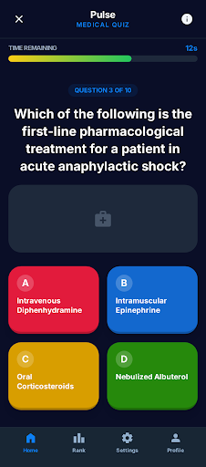
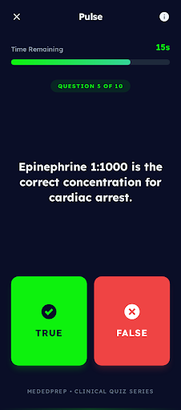
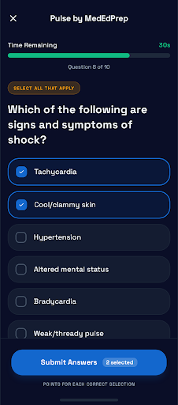
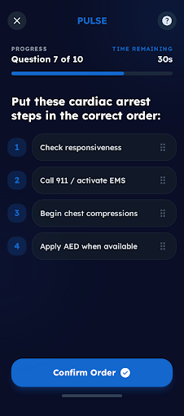
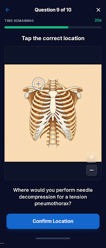
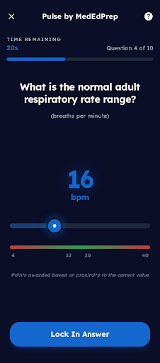
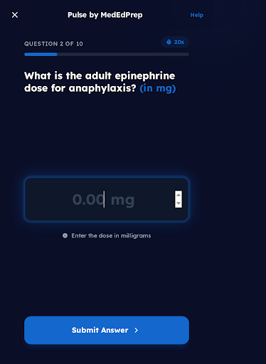
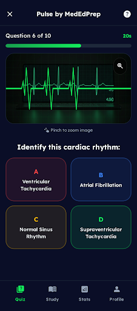
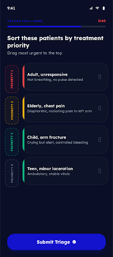

By the Numbers
As of May 5, 2026MedEdPrep is an EMS education platform serving EMT, AEMT, and Paramedic students across 30+ states. Everything below is real production data, not projections. This is the dataset you will be working with.
Item Bank Structure
Every question is tagged with up to 4 subcategories and 10 learning objectives, mapped to NHTSA domains. Each item carries response history from thousands of students.
Where you come in: The raw data to compute IRT parameters, discrimination indices, and point-biserial correlations already exists across 1.6M responses. Item-level response breakdowns, distractor selection frequencies, and difficulty indices are all accessible. What has not been done yet is the formal psychometric analysis layer on top of it. That is your work.
We have a question generator that is trained on current EMS textbooks and other reputable medical sources. These items are NHTSA-mapped at the objective level and awaiting SME review before entering the production bank.
Where you fit: Item analysis, distractor quality review, and defining the psychometric criteria for what "good enough" looks like before an item enters production. Your expertise shapes both what enters the bank and how the AI generates better items over time.
Response Data
You already know this data from the anonymized dataset, but here is the full picture. Every response record captures correctness, time spent, confidence rating, full answer selection (for distractor analysis), domain, quiz type, exam level, and position in sequence. The confidence field has the strongest coverage on Targeted Quizzes (59.1%) and adaptive exams.
Question Banks that Feed the Data
- Domain-based proficiency assessment
- Variable length based on exam level and performance
- Includes scenario-based clinical chapters
- Targeted Quizzes and simulated exams
- Voluntary, self-directed practice
- Key metacognitive control signal (273K responses)
- Final readiness check before NREMT
- Multiple versions available per exam level
- Instructor-gated, scored, and tracked
- Topic-specific classroom assessments
- Instructor-built or assigned from bank
- Formative assessment throughout the course
The Current Adaptive Engine
You asked what algorithms we use. Here is the honest answer.The adaptive exam is not IRT-based. It is a domain-mastery proficiency system with random item selection from pools. There is no theta estimation, no item information function, no maximum-information selection. That is not a limitation we are ignoring. It is the reason you are here.
How the Algorithm Currently Works
Changing SoonEach exam has a configurable distribution of questions across domains (e.g., Airway 18%, Medical 22%, Trauma 20%). The initial pool of questions is drawn proportionally from these domain allocations.
Questions are selected randomly from domain-specific pools. No difficulty targeting, no ability estimation. Every student sees questions drawn at random from the same pool at their exam level.
After the initial questions, the system calculates domain-level percentages. If any domain is below 70%, it randomly selects a failing domain and pulls the next available question from that domain. The "adaptive" part is domain-focused remediation, not difficulty-based.
The exam ends when one of three conditions is met:
We are actively rebuilding the adaptive logic right now. The dev team is implementing difficulty-based item selection, minimum domain exposure guarantees, and adding point-biserial and discrimination indices to the question KPIs. Here is the phased approach:
- Minimum of 3 questions per domain in an initial "feeler" phase before adaptive routing kicks in
- Difficulty-based item selection: after the initial phase, if a student is struggling, give them easier questions. If they are succeeding, give them harder ones. Routed by the difficulty index.
- Minimum of 8 question exposure per domain before a student can be failed out of a category
- Adding point-biserial correlation and discrimination index to the question KPI dashboard
Replace raw correct percentage with calibrated difficulty parameters. We have the response volume to do this across the full production bank. The point-biserial and discrimination indices being added to the KPIs will give us the item-level diagnostics to identify which items are working and which need attention before calibration.
Layer in discrimination and guessing. We already capture full distractor selection data, response timing, and option-level frequencies, so the data is there. The timing data in particular should help flag items with aberrant response patterns. Once we have all three parameters, the adaptive engine becomes a true CAT.
This is where you fit in directly. The dev team is building the infrastructure for difficulty-based routing. You bring the psychometric rigor that turns correct percentages into calibrated IRT parameters, and turns "give them an easier question" into formal maximum-information item selection.
Initial questions are drawn randomly from domain-specific pools, proportional to a configurable domain percentage distribution. During the adaptive phase, the system picks a random failing domain and pulls the next available question. No difficulty targeting.
Pass requires ≥70% in every domain. Dropping below the fail threshold in any single domain triggers an immediate fail. Exam length varies by exam level and configuration.
Each adaptive exam includes 3 to 5 clinical scenario chapters. A chapter is a patient case that unfolds across three phases. This mirrors how NREMT structures its exam and how real EMS calls unfold.
Dispatch information, response decisions, and pre-arrival preparation. The student knows where they are going but has not arrived yet. Questions focus on anticipation, resource planning, and scene safety considerations.
"You are dispatched to a 67-year-old male experiencing chest pain at a residential address. Response time is approximately 8 minutes. What information would you request from dispatch?"
Patient assessment, clinical decision-making, and intervention. The student is face-to-face with the patient. Questions build on the dispatch info from En Route and test the ability to assess, prioritize, and treat.
"On arrival, you find the patient sitting upright, diaphoretic, and clutching his chest. Vitals: BP 158/94, HR 102, SpO2 94%. What is your first intervention?"
Transport decisions, ongoing care, hospital handoff, and documentation. The patient is in the ambulance or being transferred. Questions test continuity of care, reassessment, and communication.
"During transport, the patient's chest pain resolves after nitroglycerin administration, but he becomes hypotensive at 88/56. What is your next action?"
These are behavioral signals computed for every exam attempt, at both the individual and class level. Not psychometric measures, but useful foundations.
Average time per question, time on correct vs. incorrect. Detects overthinking, rushing, or balanced patterns.
First-half vs. second-half accuracy. Flags fatigue (≥8% drop), warmup (≥8% gain), or consistent performance.
Speed x correctness matrix. Fast + Correct = confident knowledge. Fast + Wrong = overconfident. Slow + Wrong = struggling.
Longest correct and incorrect runs, end-of-exam streak, consistency via standard deviation. Insight text generated per attempt.
Per-domain average scores and pass rates across the whole class. Domains flagged as critical (<40%), concern (40-60%), or on track (>60%).
Automatic bucketing: critical (needs immediate support), almost there (close to passing), and passed. Sorted by accuracy.
For each failing student, shows which domains failed and exactly how far from 70% they are. Sorted closest-to-passing first, so instructors prioritize effectively.
Auto-generated action items in three categories: immediate focus areas, test strategy patterns to address, and individual students needing intervention.
Pulse & Question Types
The next-generation platformPulse is a separate platform from the main test prep product. It is gamified, real-time, multiplayer, and built around engagement first. It has its own item bank, its own question types, and its own scoring model. Think of it as Kahoot built specifically for EMS education, with psychometric infrastructure designed in from the start.
Power-curve time decay, streak multipliers (up to 1.5x), and speed bonuses. Scoring optimizes for engagement, not measurement precision.
But: Every response still has a binary correct/incorrect signal underneath the game layer. That data is psychometrically usable.
Every Pulse question maps to a primary domain, up to 4 subtopics, and up to 10 learning objectives. Same depth as the main platform.
This enables: Mastery tracking at the objective level, gap analysis across question types, and curriculum coverage reporting.
A half-life decay formula is already coded and ready to be wired into recommendations. Tracks how mastery fades over time and can suggest when to revisit a topic.
Status: Formula is production-ready. Waiting on enough game data to start driving recommendations.
Several of the question types below support partial credit scoring. Select All uses hit/miss ratios with a penalty for incorrect selections. Hotspot uses distance-based tiers. Slider and Drug Calc use proximity scoring. Ordering scores per-position accuracy. This gives richer signal than binary MCQ for both game scoring and psychometric analysis.
Question Types









The AI-Assisted Question Pipeline
Students help build the bank while they studyWe have an AI question generator trained on current EMS textbooks and reputable medical sources. Right now it is used internally to produce items for SME review. The next step is putting it in the hands of students, so that every study session generates new questions, and the students themselves become part of the quality pipeline.
The Feedback Loop
After completing a quiz, exam, or study session, the student can engage with a chatbot that has full context of EMS curriculum. The AI sees what the student just studied, how they performed, and where they struggled.
The chatbot generates 5 novel questions on the spot, calibrated to the student's level. It can adjust difficulty, question length, answer complexity, and question type. These questions are not from the existing bank. They are new.
The student answers the AI-generated questions. Every response is captured: correctness, timing, confidence. The student is practicing and learning. Meanwhile, we are collecting response data on brand new items without anyone doing extra work.
As AI-generated items accumulate responses from multiple students, they can be evaluated psychometrically. Items that perform well (good discrimination, appropriate difficulty, effective distractors) get flagged for SME review. Items that do not perform well get retired or revised.
Items that pass both psychometric validation and SME review enter the production bank with calibrated parameters from day one. The AI generation rules are refined based on what worked and what did not, so future items are better from the start.
You define what "good enough" looks like before an AI-generated item enters production. Distractor quality. Stem clarity. Cognitive level targeting. Option homogeneity. These rules feed directly into the AI's generation prompts, so the system learns from your standards.
This loop is voluntary self-testing. A student who engages with the chatbot after a quiz is demonstrating the same metacognitive control behavior you are studying. The AI tailors questions based on the student's performance, which is adaptive self-regulated learning in action. This is a natural extension of your TQZ research.
The Team
Who you will work withParamedic (NRP, CCP-C, FP-C) and EMS educator. Built every platform in the portfolio. Your primary point of contact for scope, direction, and psychometric questions.
- Designed the adaptive exam architecture and item bank structure
- Runs the dev team and product roadmap
- Will be your direct collaborator on IRT implementation decisions
Paramedic and experienced EMS educator. Full-time as of late April. Nationwide relationships at the state and program level.
- Your connection to what instructors and programs actually need
- Can surface real-world feedback on how assessments are used in the field
- Works closely with you and Sam on CE content
Paramedic and EMS educator. Operations, content coordination, and CE production support. Keeps the day-to-day running while the team scales.
- Your go-to for logistics, scheduling, and content pipeline coordination
- Manages the SME review workflow for new items
- Tagged on your onboarding email alongside Heather
The development team building the platform infrastructure. Currently implementing the difficulty-based adaptive routing and KPI additions you read about in the algorithm section.
- They build the engineering layer; you provide the psychometric layer
- Weekly meetings where you can join to discuss IRT implementation specifics
- Laravel/PHP (mededprep-c), Express/React/TypeScript (Pulse)
Summer Project Tracks
June 15 to August 21, 2026You said you prefer a clear direction with agreed-upon checkpoints. Here are four tracks with defined milestones. We will align on priorities during your first week and adjust based on your interests and what the data tells us. These are not sequential. They can run in parallel or shift as the summer unfolds.
Calibrate the production item bank on a formal IRT model. Replace raw correct percentages with proper difficulty parameters. Build the foundation that everything else depends on.
Analyze the existing bank for distractor effectiveness, stem quality, and cognitive level distribution. Define psychometric standards for the AI question generator. Review and qualify items from the ~10,000 unreviewed bank.
Take the difficulty-based routing the dev team is building and layer in proper ability estimation and information-based item selection. Extend the approach to CE mini-adaptive assessments.
Design the psychometric layer for the AI chatbot question pipeline. Define how AI-generated items get validated, when they are ready for production, and how student study behavior connects back to your metacognition research.
This page was built for you. We want you to walk in on June 15 with a clear picture of what exists, what is being built, and where your expertise fits. We are genuinely excited to have someone with real IRT skills on the team. If you have questions about anything here, send them over and we will get you answers before your start date.